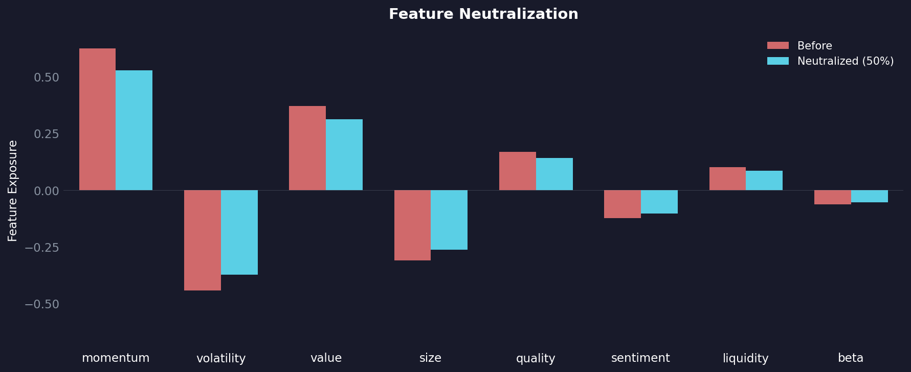

Feature Transformers
Feature transformers are the backbone of centimators, providing scikit-learn compatible transformations that work seamlessly with both Pandas and Polars DataFrames through narwhals. These transformers specialize in time-series and cross-sectional financial data transformations.
All transformers follow the standard scikit-learn API (fit, transform, fit_transform) and support metadata routing for passing auxiliary data like date or ticker series through pipelines.
RankTransformer
Converts numeric features into their normalized rank within groups (typically by date). This is essential for creating market-neutral features that capture relative performance across assets.
from centimators.feature_transformers import RankTransformer
# Rank features within each date
ranker = RankTransformer(feature_names=['close', 'volume'])
ranked_features = ranker.fit_transform(
X[['close', 'volume']],
date_series=df['date']
)
# Output: close_rank, volume_rank (values between 0 and 1)
Key Features:
- Normalizes ranks to [0, 1] range
- Handles missing values gracefully
- Groups by any categorical variable (typically dates)
LagTransformer
Creates lagged (shifted) versions of features within groups (typically by ticker). Essential for exposing temporal patterns to machine learning models.
from centimators.feature_transformers import LagTransformer
# Create multiple lags for each feature
lagger = LagTransformer(
windows=[1, 5, 10, 20], # 1-day, 1-week, 2-week, 1-month lags
feature_names=['close', 'volume']
)
lagged_features = lagger.fit_transform(
X[['close', 'volume']],
ticker_series=df['ticker']
)
# Output: close_lag1, volume_lag1, close_lag5, volume_lag5, etc.
Key Features:
- Preserves temporal ordering within groups
- Prevents data leakage across different assets
- Configurable lag windows
MovingAverageTransformer
Computes rolling averages over specified windows within groups. Useful for smoothing noisy signals and creating trend indicators.
from centimators.feature_transformers import MovingAverageTransformer
# Create moving averages with different windows
ma_transformer = MovingAverageTransformer(
windows=[5, 10, 20, 50], # Short to long-term trends
feature_names=['close', 'volume']
)
ma_features = ma_transformer.fit_transform(
X[['close', 'volume']],
ticker_series=df['ticker']
)
# Output: close_ma5, volume_ma5, close_ma10, volume_ma10, etc.
Key Features:
- Rolling window calculations within groups
- Multiple window sizes in single transformation
LogReturnTransformer
Computes log returns (first difference of natural logarithm) within groups. The standard way to calculate asset returns while ensuring stationarity.
from centimators.feature_transformers import LogReturnTransformer
# Calculate log returns for price data
log_return_transformer = LogReturnTransformer(feature_names=['close', 'open'])
returns = log_return_transformer.fit_transform(
X[['close', 'open']],
ticker_series=df['ticker']
)
# Output: close_logreturn, open_logreturn
GroupStatsTransformer
Calculates statistical measures across groups of related features horizontally (row-wise). Useful for creating aggregate features from multiple related columns.
from centimators.feature_transformers import GroupStatsTransformer
# Define feature groups and calculate statistics
feature_groups = {
'price_features': ['open', 'high', 'low', 'close'],
'volume_features': ['volume', 'dollar_volume']
}
stats_transformer = GroupStatsTransformer(
feature_group_mapping=feature_groups,
stats=['mean', 'std', 'skew'] # Choose specific statistics
)
group_stats = stats_transformer.fit_transform(X)
# Output: price_features_groupstats_mean, price_features_groupstats_std, etc.
Available Statistics:
mean: Average across the groupstd: Standard deviation (sample, ddof=1)skew: Skewness (bias-corrected)kurt: Excess kurtosis (bias-corrected)range: Max - Mincv: Coefficient of variation (std/mean)
DimReducer
Reduces the dimensionality of features using PCA, t-SNE, or UMAP. Useful for compressing high-dimensional feature spaces, visualization, and removing noise.
from centimators.feature_transformers import DimReducer
# PCA: Fast, linear, preserves global structure
pca_reducer = DimReducer(
method='pca',
n_components=10,
feature_names=['feature1', 'feature2', 'feature3', 'feature4']
)
reduced_features = pca_reducer.fit_transform(X)
# Output: dim_0, dim_1, ..., dim_9
# t-SNE: Non-linear, preserves local structure (good for visualization)
tsne_reducer = DimReducer(
method='tsne',
n_components=2,
random_state=42,
perplexity=30 # Additional kwargs passed to sklearn.manifold.TSNE
)
viz_features = tsne_reducer.fit_transform(X)
# Output: dim_0, dim_1
# UMAP: Non-linear, preserves local + global structure
# Requires: uv add 'centimators[all]'
umap_reducer = DimReducer(
method='umap',
n_components=5,
random_state=42,
n_neighbors=15 # Additional kwargs passed to umap.UMAP
)
reduced_features = umap_reducer.fit_transform(X)
# Output: dim_0, dim_1, dim_2, dim_3, dim_4
Available Methods:
pca: Principal Component Analysis (linear, fast, deterministic)tsne: t-distributed Stochastic Neighbor Embedding (non-linear, stochastic, visualization)umap: Uniform Manifold Approximation and Projection (non-linear, balanced, requirescentimators[all])
FeatureNeutralizer
In competitions like Numerai, your model's predictions often correlate with specific features—this is called feature exposure. High exposure to any single feature can hurt performance when that feature's predictive power shifts over time.
FeatureNeutralizer reduces exposure by subtracting a proportion of the linear relationship between your predictions and the features. Think of it as "de-correlating" your signal from known factors.

The chart shows predictions before (coral) and after (cyan) 50% neutralization.
from centimators.feature_transformers import FeatureNeutralizer
neutralizer = FeatureNeutralizer(
proportion=0.5, # How much to neutralize [0, 1]
pred_name='prediction',
feature_names=['feature1', 'feature2', 'feature3']
)
neutralized = neutralizer.fit_transform(
df[['prediction']],
features=df[['feature1', 'feature2', 'feature3']],
era_series=df['era']
)
# Output: prediction_neutralized_0.5
How it works:
- Gaussianizes predictions within each era
- Fits a linear model:
prediction ~ features - Subtracts
proportion × exposurefrom predictions - Re-normalizes to [0, 1]
Trade-off: Higher proportion = less feature exposure, but also potentially less signal. At proportion=1.0, you remove all linear relationship with features.
FeaturePenalizer
FeaturePenalizer takes a different approach: instead of subtracting a fixed proportion, it uses gradient descent to find the minimal adjustment that caps all exposures below a threshold.

The key difference from neutralization: penalization enforces a hard cap (dashed lines at ±0.1). Every cyan bar stays within bounds—the optimizer finds the smallest change needed to achieve this.
from centimators.feature_transformers import FeaturePenalizer
penalizer = FeaturePenalizer(
max_exposure=0.1, # Cap exposure at ±0.1
pred_name='prediction',
feature_names=['feature1', 'feature2', 'feature3']
)
penalized = penalizer.fit_transform(
df[['prediction']],
features=df[['feature1', 'feature2', 'feature3']],
era_series=df['era']
)
# Output: prediction_penalized_0.1
EmbeddingTransformer
Requires DSPy
This transformer requires the dspy optional dependency. Install with:
Embeds text and categorical features into dense vector representations using DSPy's Embedder. Supports both hosted embedding models (OpenAI, Cohere, etc.) and custom local models.
Basic Text Embedding
from centimators.feature_transformers import EmbeddingTransformer
# Using a hosted model
embedder = EmbeddingTransformer(
model="openai/text-embedding-3-small",
feature_names=['news_headline', 'company_description']
)
embedded_features = embedder.fit_transform(df[['news_headline', 'company_description']])
# Output: news_headline_embed_0, news_headline_embed_1, ..., news_headline_embed_1535
# company_description_embed_0, company_description_embed_1, ..., etc.
Local Model (Sentence Transformers)
from sentence_transformers import SentenceTransformer
# Load a local embedding model
model = SentenceTransformer('all-MiniLM-L6-v2')
embedder = EmbeddingTransformer(
model=model.encode, # Pass the encode function
feature_names=['text_column'],
batch_size=100
)
embedded_features = embedder.fit_transform(df[['text_column']])
# Output: text_column_embed_0, text_column_embed_1, ..., text_column_embed_383
Custom Embedding Function
import numpy as np
def custom_embedder(texts):
"""Custom embedding function - must return numpy array."""
# Your custom logic here
embeddings = your_model.embed(texts)
return np.array(embeddings, dtype=np.float32)
embedder = EmbeddingTransformer(
model=custom_embedder,
feature_names=['text_feature']
)
Key Features:
- Supports both hosted (via litellm) and local embedding models
- Handles null values (fills with zero vectors)
- Automatically expands embeddings into sklearn-compatible columns
- Backend-agnostic (works with Polars, Pandas)
- Configurable batch size and caching for hosted models
Pipeline Integration
All transformers work seamlessly in scikit-learn pipelines with metadata routing:
from sklearn import set_config
from sklearn.pipeline import make_pipeline
# Enable metadata routing
set_config(enable_metadata_routing=True)
# Create pipeline with multiple transformers
pipeline = make_pipeline(
LogReturnTransformer().set_transform_request(ticker_series=True),
RankTransformer().set_transform_request(date_series=True),
LagTransformer(windows=[1, 5, 10]).set_transform_request(ticker_series=True),
MovingAverageTransformer(windows=[5, 20]).set_transform_request(ticker_series=True)
)
# Transform data with metadata routing
transformed = pipeline.fit_transform(
df[['close', 'volume']],
date_series=df['date'],
ticker_series=df['ticker']
)
Metadata Routing:
date_series: Used byRankTransformerfor cross-sectional rankingticker_series: Used by temporal transformers (LagTransformer,MovingAverageTransformer,LogReturnTransformer) to maintain asset boundariesera_series: Used byFeatureNeutralizerandFeaturePenalizerto process predictions era-by-erafeatures: Used byFeatureNeutralizerandFeaturePenalizerfor exposure calculation